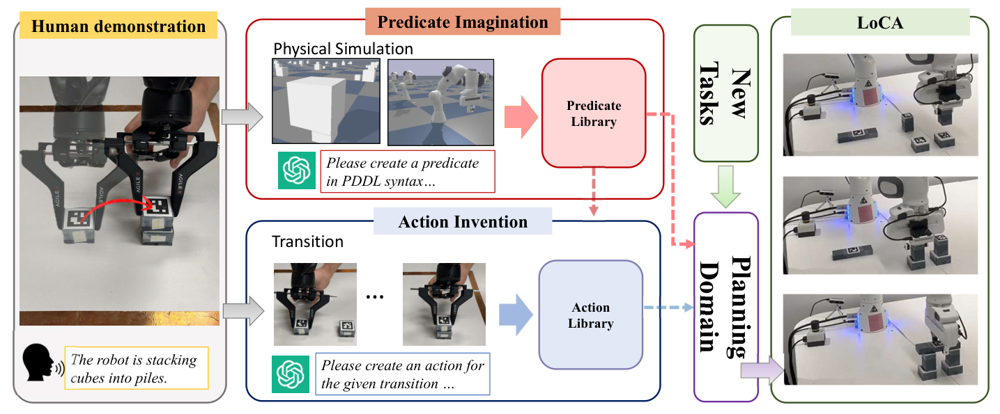

One Demo Is All It Takes:
Planning Domain Derivation with LLMs from a Single Demonstration
Pre-trained large language models (LLMs) show promise for robotic task planning but often struggle to guarantee correctness in long-horizon problems. Task and motion planning (TAMP) addresses this by grounding symbolic plans in low-level execution, yet it relies heavily on manually engineered planning domains. To improve long-horizon planning reliability and reduce human intervention, we present Planning Domain Derivation with LLMs (PDDLLM), a framework that automatically induces symbolic predicates and actions directly from demonstration trajectories by combining LLM reasoning with physical simulation roll-outs.
Unlike prior domain-inference methods that rely on partially predefined predicates or natural-language descriptions of planning domains, PDDLLM constructs domains with minimal manual initialization and automatically integrates them with motion planners to produce executable plans. Across 1,200 tasks in nine environments, PDDLLM outperforms six LLM-based planning baselines, achieving ≥ 20% higher success rates, lower token cost, and successful deployment on multiple physical robot platforms.
An algorithm that combines LLM reasoning with physical simulation roll-outs to automatically generate a human-interpretable PDDL planning domain from a single demonstration.
A systematic interface that automatically grounds the generated symbolic domain into motion-planner constraints — no manual alignment between PDDL actions and low-level skills.
Extensive evaluation on 1,200 tasks across 9 environments shows superior long-horizon planning and token efficiency. Successfully deployed on three physical robot platforms.

We compare PDDLLM against six LLM-based planning baselines across nine task families, measuring planning success rate and token cost. All baselines use a 50-second time limit unless noted.
PDDLLM matches expert-designed domains on most tasks and dominates every LLM baseline by ≥ 40% overall.
| Task | Expert | LLMTAMP | LLMTAMP-FF | LLMTAMP-FR | RuleAsMem | PDDLLM |
|---|---|---|---|---|---|---|
| Stack | 98.5 | 41.7 | 70.8 | 64.2 | 85.5 | 97.5 |
| Unstack | 100 | 89.4 | 94.6 | 92.1 | 88.4 | 97.7 |
| Color Classification | 100 | 18.1 | 36.4 | 49.0 | 88.7 | 100 |
| Alignment | 100 | 31.1 | 52.0 | 40.0 | 96.0 | 100 |
| Parts Assembly | 98.9 | 33.3 | 53.9 | 41.3 | 95.0 | 100 |
| Rearrange | 73.3 | 5.6 | 17.4 | 11.8 | 1.1 | 64.3 |
| Burger Cooking | 100 | 27.8 | 50.0 | 48.6 | 27.8 | 91.7 |
| Bridge Building | 100 | 43.3 | 53.3 | 51.7 | 20.0 | 87.2 |
| Tower of Hanoi | 100 | 14.3 | 14.3 | 14.3 | 14.3 | 100 |
| Overall | 95.7 | 35.7 | 52.5 | 48.6 | 69.9 | 93.3 |
Takeaway: PDDLLM reaches an overall 93.3% success rate — within striking distance of expert-designed domains (95.7%) and a +40.8% absolute improvement over the strongest LLM-based baseline (LLMTAMP-FF at 52.5%).
Comparison on the three hardest tasks at an extended 500-second time limit. Tokens reported in thousands (k).
| Task | Success Rate (%) ↑ | Token Cost (k) ↓ | ||||||
|---|---|---|---|---|---|---|---|---|
| PDDLLM | LLMTAMP | o1-TAMP | R1-TAMP | PDDLLM | LLMTAMP | o1-TAMP | R1-TAMP | |
| Rearrangement | 73.8 | 5.6 | 70.8 | 40.0 | 334 | 212 | 1200 | 1460 |
| Tower of Hanoi | 100.0 | 14.3 | 33.3 | 14.3 | 535 | 36 | 529 | 353 |
| Bridge Building | 87.2 | 44.3 | 51.7 | 40.0 | 375 | 50 | 270 | 363 |
| Overall | 80.5 | 13.9 | 61.5 | 35.9 | 415 | 99 | 666 | 725 |
Takeaway: PDDLLM beats even o1-/DeepSeek-R1-based TAMP variants on the hardest tasks while using fewer tokens than the reasoning models. Tokens are spent only during one-shot domain derivation; execution is handled by a PDDL solver at zero token cost — ideal for long-term deployment.
Percentage of missing or redundant predicates relative to expert-designed domains, averaged over three runs.
| Task | Missing | Redundant |
|---|---|---|
| Stack | 4.2% | 8.3% |
| Burger Cooking | 22.2% | 3.7% |
| Bridge Building | 22.2% | 3.7% |
| Tower of Hanoi | 0.0% | 14.3% |
Takeaway: Even on the most complex tasks (bridge, burger), PDDLLM misses only ~22% of predicates relative to a human expert — yet still attains 87–92% success, indicating the surviving logical structure is sound.
PDDLLM was deployed on three physical platforms — a Franka Panda arm, an Agilex Piper arm, and a UR5e arm — across stacking, burger-cooking, bridge-building, and Tower-of-Hanoi tasks. Videos are played 1× unless labeled otherwise.
If you find this work useful, please cite:
@article{huang2025pddllm,
title = {One Demo Is All It Takes: Planning Domain Derivation with LLMs from A Single Demonstration},
author = {Huang, Jinbang and Xiao, Yixin and Zhang, Zhanguang and Coates, Mark and Hao, Jianye and Zhang, Yingxue},
journal = {arXiv preprint arXiv:2505.18382},
year = {2025},
url = {https://arxiv.org/abs/2505.18382}
}